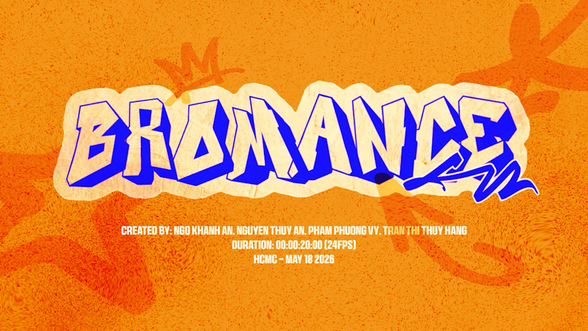
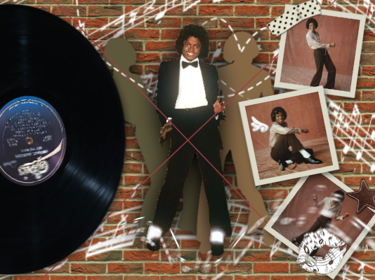
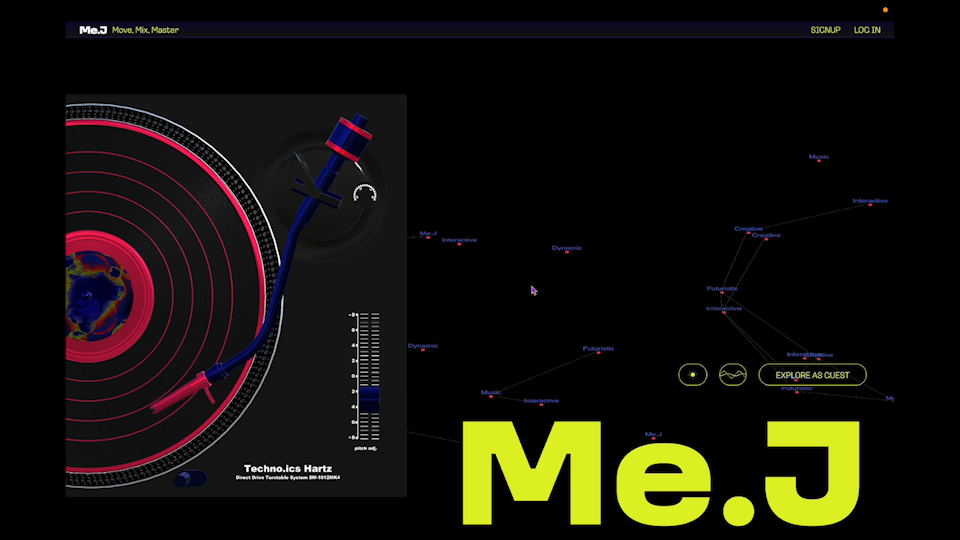
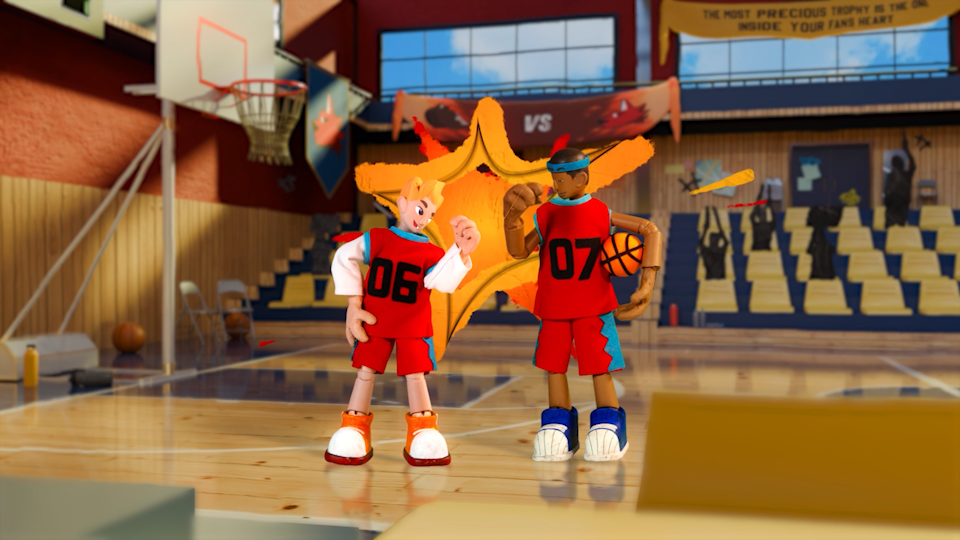
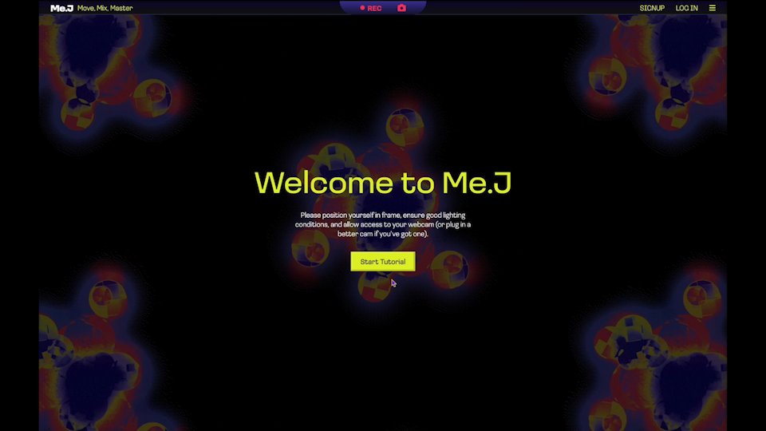
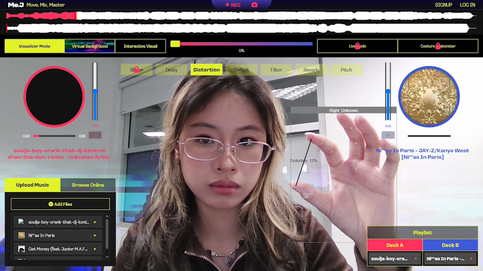
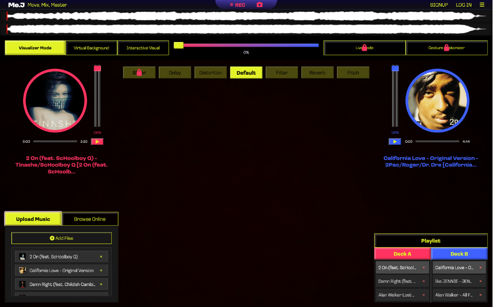
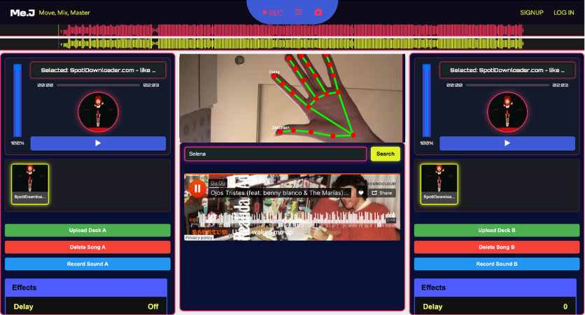
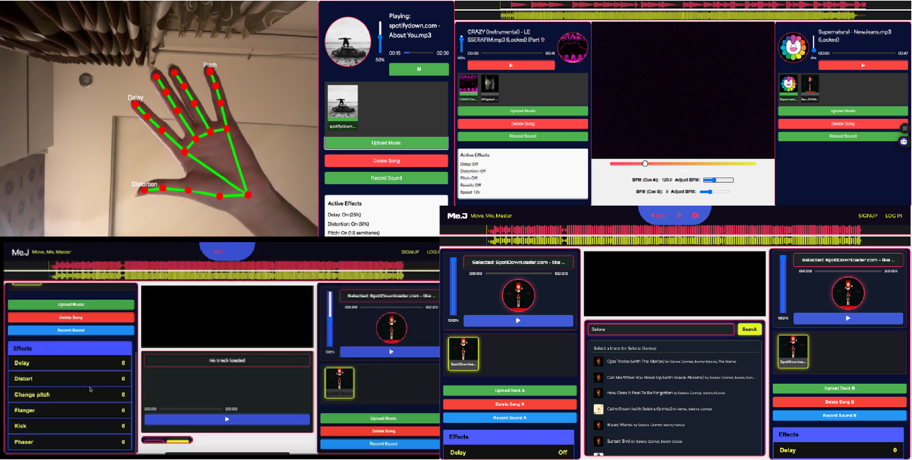

Bromance.mp4
Bromance
A simple ripped pair of pants spirals into total chaos when a best friend tries to cover it up, making the embarrassment twice as loud.
Details
Bromance is a 20s stop-motion animation about the quiet, unglamorous heroism found in true friendship. Set against the backdrop of a Vietnamese high school basketball court, the film follows two best friends navigating an unexpectedly mortifying moment with humor, heart, and a whole lot of awkward poses.
When everything goes wrong at the worst possible time, it's not a cape-wearing hero who saves the day - it's a teammate who gives everything he has, quite literally, so his friend can hold his head high. Blending comedic timing with a stylized visual aesthetic, Bromance celebrates the idea that family isn't always blood - sometimes it's the guy who has your back, and your pants.

Credits
Art Director | Ngo Khanh An
Storyboard Development | Ngo Khanh An, Nguyen Thuy An, Pham Phuong Vy
Characters Concept Sketches | Tran Thi Thuy Hang
Puppet & Props Fabrication | Ngo Khanh An, Nguyen Thuy An, Pham Phuong Vy
Costumes Design | Nguyen Thuy An, Pham Phuong Vy
3D Environment Artists | Ngo Khanh An, Tran Thi Thuy Hang
2D Assets Artists | Nguyen Thuy An, Tran Thi Thuy Hang
Animation Supervisor/DOP | Ngo Khanh An
Animators | Nguyen Thuy An, Pham Phuong Vy, Ngo Khanh An
Sound Design | Ngo Khanh An, Nguyen Thuy An
VFX & Compositing | Ngo Khanh An
Special Thanks To
Ricardo Arce
Huoston Rodriguez
For More Details
Visit Bromance original video on YouTube.
Visit Bromance original post on Instagram.
Visit Bromance's Breakdown on Instagram.
Visit the Making of Bromance on Instagram.
Visit Ngo Khanh An on Instagram.
Visit Nguyen Thuy An on Instagram.
Visit Tran Thi Thuy Hang on Instagram.
Experiment 2
Experiment 2
Experiment information and images will be added here.
Details
Placeholder content for the second experiment.
Michael Jackson.mp4
Michael Jackson
Motion Graphics
An experimental motion graphics project tributing to Michael Jackson and the Black Music History.
Me.J_Website_Demo.mp4
Me.J
Move. Mix. Master.
Details
Me.J is a hand gesture-based music control website powered by MediaPipe Pose Estimation, allowing artists to manipulate sound naturally. Integrated with Tone.js, it provides a versatile, expressive tool for DJs, producers, and performers, transforming music interaction into an immersive visual and auditory experience.
By removing physical constraints, Me.J redefines digital music performance, enabling fluid, expressive control through body movements. As the demand for immersive performances grows, Me.J leads the way in merging technology with artistic freedom.
Key Features
- Defined gesture system
- Cloud-based song searching function
- Music Management System
- Crossfader
- Visualizer Mode
- Record and save mix as video file
- Upgrade Prompt
- Sign up / Log in Popup
- Menu Bar
- Set up Guidance & Tutorial

Gesture System
Effect Selection (Left Hand)
- Rotate your left thumb left or right to cycle through available effects in the effect roulette, including reverb, delay, distortion, and pitch shift.
- Raise your thumb to select the default effect.
Effect Locking (Left Hand)
- Raise your pinky finger to lock the selected effect.
Effect Level Control (Right Hand)
- After selecting an effect, use a pinch gesture with your right hand. Touching fingers set the intensity to 0%; spreading them apart sets it to 100%. This works while the effect is unlocked.
Crossfader
- Use a peace sign to slide the crossfader left or right.
- Slide left to boost Deck A and lower Deck B.
- Slide right to boost Deck B and lower Deck A.

Cloud-based Song Searching Function
Music is stored in the cloud using MongoDB, along with details like song title and artist. When a user searches for a song, the system checks the database for matches and displays the results directly in the Browse Online section.
Music Management System
After uploading music from your device or browsing online, simply drag and drop tracks into Deck A or Deck B in the Playlist window. The highlighted track in each column indicates the currently active song for that deck.
Visualizer Mode
Visualizer Mode offers two options to enhance your performance visuals:
- Virtual Background: Add a custom visual layer to your webcam background.
- Interactive Visual: Add graphics that react in real time to your hand gestures.
Upgrade Prompt
Clicking a locked feature triggers an upgrade prompt, guiding users to the subscription panel.
Sign up / Log in Popup
Clicking the Sign Up or Log In buttons will open the authentication panel. Users can switch between the two panels as needed.

Finalized product full layout.
Menu Bar
The menu bar includes the following sections:
- Saved Sessions: Save your current DJ setup, including effects and playlists.
- Music Library: Access uploaded songs or recently used tracks.
- Effects Library: Download additional sound effects.
- Visual Library: Add more visuals for Visualizer Mode.
- Settings: Manage your account and preferences.
If a user has not signed in, clicking any of these options will automatically open the Sign Up / Log In panel.
Set up Guidance & Tutorial
When users first enter the DJ interface, they’re greeted with a splash screen that walks them through the essentials - making sure they’re centered in frame, have good lighting, and camera access is enabled.Once setup is complete, they’ll dive into a step-by-step onboarding tutorial covering everything they need to get started:

First prototype full layout.

Some previous trial and error prototypes.
Credits
Product Developer | Pham Phuong Vy
Product Developer | Ngo Khanh An
Product Developer | Nguyen Nhu Phuong Uyen
Special Thanks To
Tom Nguyen
For More Details
Visit the official Me.J website.
Visit Me.J original post on Instagram.
Visit Nguyen Nhu Phuong Uyen on Instagram.
Visit Ngo Khanh An on Instagram.
Experiment 5
Experiment 5
Experiment information and images will be added here.
Details
Placeholder content for the fifth experiment.